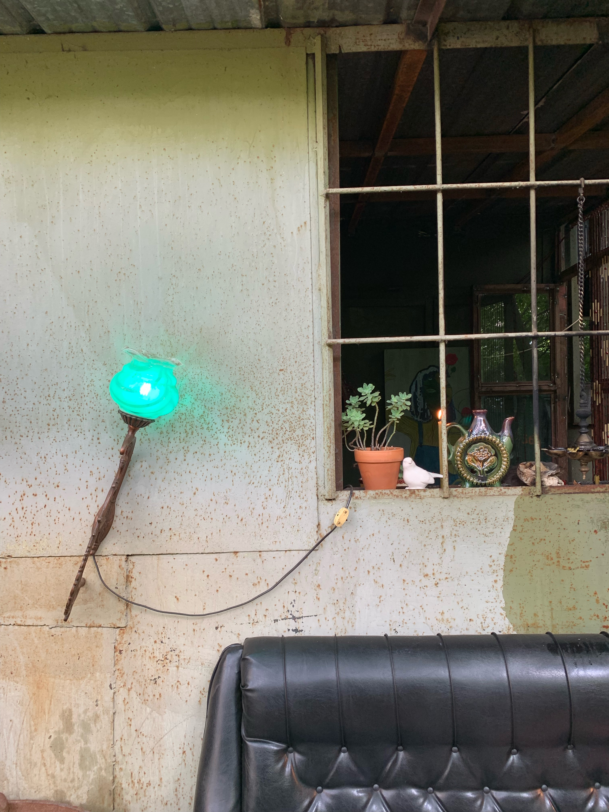
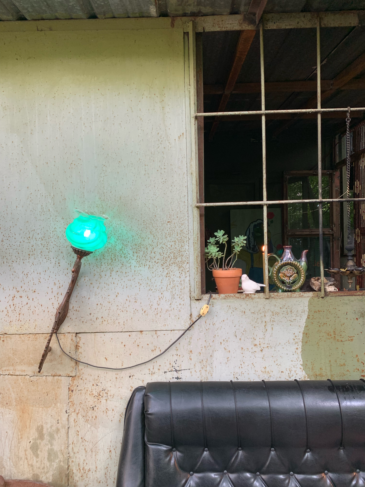

random t room, 2018-2023
An ongoing nomadic project started in 2018 against the backdrop of the rave culture, in collaboration with the artist Dasha Mamba. Essentially, it is a pop-up cafe (executed over a hundred times), with its menu structured around tea and designed as a way to connect with yourself and thoughtfully relive the rave experience-concentrated, exalted, and perhaps even aggressive.
The tea acts as a conduit into a particular state of caring and
adjusts the focus of the tearoom guest's attention. Apart from her
interaction with taste, the artist also uses aromas, sounds,
textures, and visuals to create the tearoom space in order to engage
all the senses and immerse the viewer deeper into the moment. The
tearoom is a fluid space-more of a feeling than an environment. It
fits into the context of a particular place and event, absorbs it
and with it, comes to an end. To reveal itself next time in another
guise at another event. Together with a cup of tea the artist
suggests a complex experience, through which one connects first with
oneself, and then adjusts the focus to the surrounding reality.


Korridor Club, Yerevan, Armenia, December 2022 — January 2023.
A
tearoom, located in a basement with black walls, ceiling, and floor to
create a sense of cosmos. The velvet curtains, and shiny small mirrors
added fluidity, a dripping transparent slime, while the levitating
candles deepened the feeling of weightlessness. Smoky aroma sticks
scented with nagchampa flowers and various optical illusions created
an elegant neo-witchy dark ‘pocket’ to hide in with a cup of hot tea.
Disco-Club Raduga, Moscow, 2021-2022.
The tearoom at Raduga was about adolescence, youth, brightness,
corporeality, and celebration. That theme was represented by such
artifacts as penis-shaped eclairs and puffy boobs with milk, as well
as hand gum with fruit and candy flavors.In another iteration, the
Raduga tearoom was located in a ‘luminous cabinet’ on wheels that
moved from one location to another. The tearoom opened every weekend
from 2021-2022 at different locations, along with club events.
 

Mutabor club, Moscow, 2019-2020
The Mutabor tearoom opened in the same place almost every weekend,
transforming every week to retain a character of fluidity and
elusiveness. Initially the tearoom was located on an iron table near
the garage, then it extended inside, on the roof, forming a backyard,
with a tent next to it, and finally—a greenhouse, which became a
secluded dance floor.The artists dedicated this tearoom to the theme
of ‘having tea at grandma's’. They wove candles, porcelain figurines
and other everyday objects of a bygone era into intricate compositions
in the industrial garage. By creating a sense of fragility within this
setting, they encouraged the visitor to be mindful and careful.
Pluton Club, Moscow, 2018
In the tearoom, time goes in reverse—and the one at Pluton wasn’t an
exception. The morning brings with it an ending and the night marks a
beginning. Loud music, dense smoke, dawn light, and incense comprised
the condensed setting in which the visitor is invited to take a
thoughtful cup of tea.
Aglomerat Club, Moscow 2018
At Aglomerat, the tearoom order window was located on the first floor
of a shack built from scaffolding, old parquet, doors and window
frames found in the club's storerooms.
Epizode Festival, Phu Quok, Vietnam , 2018
The tearoom was operating for 11 days—just as the festival itself.
During this time, a community of like-minded people formed around the
cafe. In addition to tea, this time food was served, demonstrating a
particular concern for the ravers.
Arma X, Funkhaus, Berlin, 2018
Located in a house on wheels, the tearoom utilized the entire circular
meadow of the club courtyard, in the center of which, there was a
campfire site, visible from all the buildings of the club. The site
attracted light, warmed with warmth, and interacted with visitors in a
tactile way.